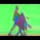

|
Home People Research News Events Projects Publications Teaching Downloads Links Intranet |
Conservative visual learning for object detection with minimal hand labeling effort (2005)Peter Roth and Helmut Grabner and Danijel Skoèaj and Horst Bischof and Aleš Leonardis Abstract: We present a novel framework for unsupervised training of an object detection system. The basic idea is to (1) exploit a huge amount of unlabeled video data by being very conservative in selecting training examples; and (2) to start with a very simple object detection system and using generative and discriminative classifiers in an iterative co-training fashion to arrive at increasingly better object detectors. We demonstrate the framework on a surveillance task where we learn a person detector. We start with a simple moving object classifier and proceed with robust PCA (on shape and appearance) as a generative classifier which in turn generates a training set for a discriminative AdaBoost classifier. The results obtained by AdaBoost are again filtered by PCA which produces an even better training set. We demonstrate that by using this approach we avoid hand labeling training data and still achieve a state of the art detection rate. |
 Download ds_dagm05.pdf
Download ds_dagm05.pdf|
|
